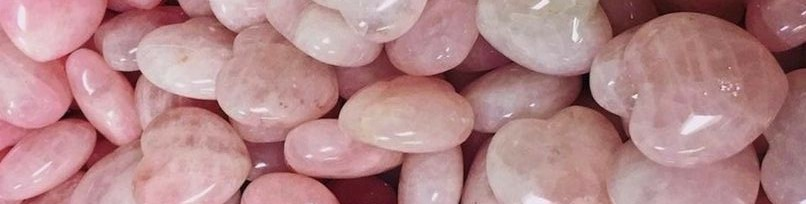

CUARZO ROSA: poderes y usos
El cuarzo rosa es una variedad de cuarzo translúcido de color rosado. Suele aparecer en forma masiva, en pegmatitas, y raras veces forma cristales o drusas. El cuarzo rosa debe su color a las trazas de titanio que contiene.
La piedra cuarzo rosa siempre ha tenido una relación íntima con el amor y el corazón. Ya en la Edad de Bronce, las civilizaciones de Oriente Medio alababan a la diosa de la fertilidad, la guerra y el amor con cuarzo rosa : Astarté. Estos rituales y ofrendas se han mantenido hasta la antigüedad. Muchas civilizaciones también la han usado, incluyendo los Cartagineses, los Etruscos, los Griegos, los Hebreos, los Herritas, los Mesopotámicos, los Fenicios, los Romanos y los Sumerios. Según la mitología griega, la piedra cuarzo rosa fue creada por Afrodita. Mientras Adonis se dedicaba a la caza, fue atacado por un jabalí que era ni más ni menos que Ares, el amante oficial de Afrodita. Afrodita se habría metido rápidamente en los arbustos, si no fuera porque estaban llenos de zarzas. Afrodita luego encontró a su amante Adonis muerto. De su sangre salió la piedra cuarzo rosa. El pueblo griego explotó mucho esta piedra para aclamar a la diosa de la belleza y el amor : Afrodita.
Poderes del cuarzo rosa
Este mineral se considera la piedra del corazón. Abre y fortalece el 4º chakra, conectando con el amor a uno mismo y el amor universal. Conecta con la paz interior y fomenta la realización personal. Es una piedra de sanación muy útil que permite liberar las emociones reprimidas en el corazón. Propicia la amistad, el amor y la armonía. Es muy adecuada para los niños por su suavidad y dulzura.
El propio aspecto delicado, de color rosa pastel, parece transmitir la propia personalidad de esta piedra: representa la pasión, la sensualidad y la ternura. La propiedad principal por la que se la conoce es, sin duda, por su fuerte capacidad para atraer el amor, romántico e incondicional. Al fin y al cabo, es considerada como la piedra de Afrodita.
Su capacidad relajante elimina las tensiones que acumulamos, a veces inconscientemente, en nuestro cuerpo y mente. Cuando llevamos esta piedra con nosotros, nos transmite una sensación de paz al reemplazar las energías negativas por positivas. Por eso, si estamos tristes o preocupados, nos ayudará a calmarnos y equilibrar nuestros pensamientos.
A nivel físico, es un aliado para curar dolencias. Por ejemplo, en el hinduismo es considerada
una de las piedras más valiosas gracias a su capacidad para liberar las penas y el dolor que
guardamos en nuestro interior.
Las propiedades de esta piedra espiritual hacen que sus beneficios vayan de la mano de las
relaciones, tanto amorosas como familiares y entre amigos, consiguiendo fortalecer los vínculos
entre las personas. Es perfecta para potenciar la comprensión y el respeto, aspectos claves en
toda relación.
Usos del cuarzo rosa
- Si estás subida en el barco de la meditación, tener cerca un cuarzo rosa contribuirá a alcanzar un estado de claridad y relajación mental.
- En cuestiones de belleza lo hemos visto utilizado como masajeador facial, debido a que mejora la circulación de la sangre. Se han señalado sus beneficios a la hora de tratar con estrés o ansiedad y, lo más curioso, como un filtro que bloquea las ondas electromagnéticas que nos rodean.
- Es muy eficaz cuando está en un espacio de la casa dedicado al descanso o si lo llevamos a nivel del corazón; lo puedes llevar en un colgante esto ayuda a sentirte siempre seguro, cooperativo, sincero, alegre y en paz consigo mismo. Atención, no la combines con minerales contrarios con mucha energía. Como por ejemplo la turquesa, el ónix, la obsidiana, el rubí, el ámbar y el ojo de tigre son ejemplos perfectos. Estas piedras tienen una tendencia a tomar el control y no permitir que los demás se expresen. Por eso le aconsejamos que las lleve solas o sobre diferentes joyas que no se toquen entre sí.
- También puede llevar un guijarro en el bolsillo, o incluso colocarlo en su mesilla de noche, y será totalmente eficaz durante la noche.
Cómo limpiar el cuarzo rosa
Para limpiar las impurezas y eliminar las energías negativas que se han acumulado en su piedra cuarzo rosa hay que seguir los siguientes pasos:
- Coloca la piedra cuarzo rosa en un envase de vidrio.
- Tapa la piedra con agua destilada o de manantial.
- Vierte un poco de sal y dejala actuar durante un dia entero.
- Luego deja que se seque al sol durante al menos seis horas, pero sin que le de la luz directa del sol, osea pon el cuarzo en la sombra.
- Otro método para eliminar las malas energías acumuladas es dejarla en un recipiente junto a la ventana durante la fase menguante y retirarlo a la mañana siguiente.
- Puede realizar estos rituales de limpieza y recarga una vez al mes o una vez a la semana, dependiendo de cómo se sienta y de la frecuencia con la que lleve la piedra.
Resumen
- Favorece la relajación.
- Evita las tensiones del cuerpo y la mente.
- Favorece el equilibrio de cuerpo y mente.
- Aporta senseción de paz y tranquilidad.
- Atrae el amor.
- Cura dolencias sel cuerpo o del alma.
- Calma la mente.
- Libera las penas.
- Promueve la empatía.
- Transmuta la energía negativa.
- Eleva la autoestima.
- Mejora el carácter y lo estabiliza.
- Puedes llevarla suelta, como joya (colgante, anillo, pulsera...) o puedes dejarla en un ambiente.
- Se limpia con agua y sal, dejándola debajo de la luz del sol o la luna unas horas.